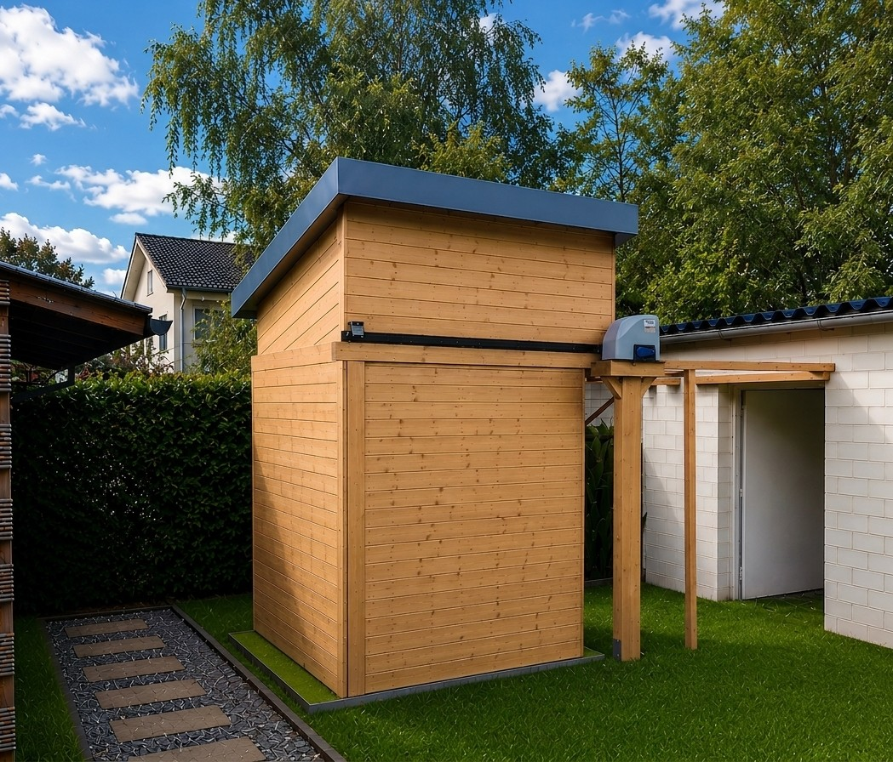
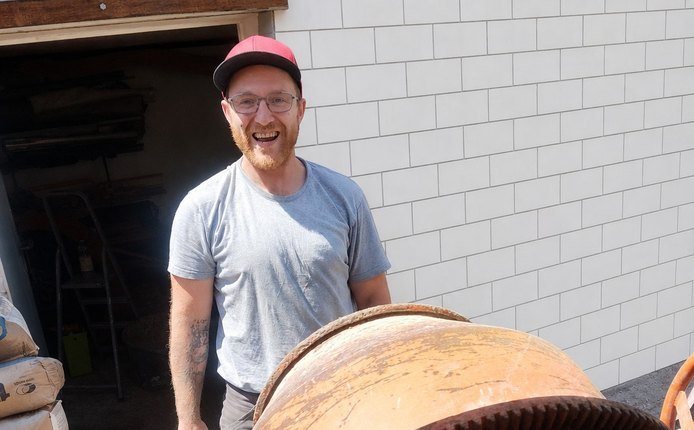
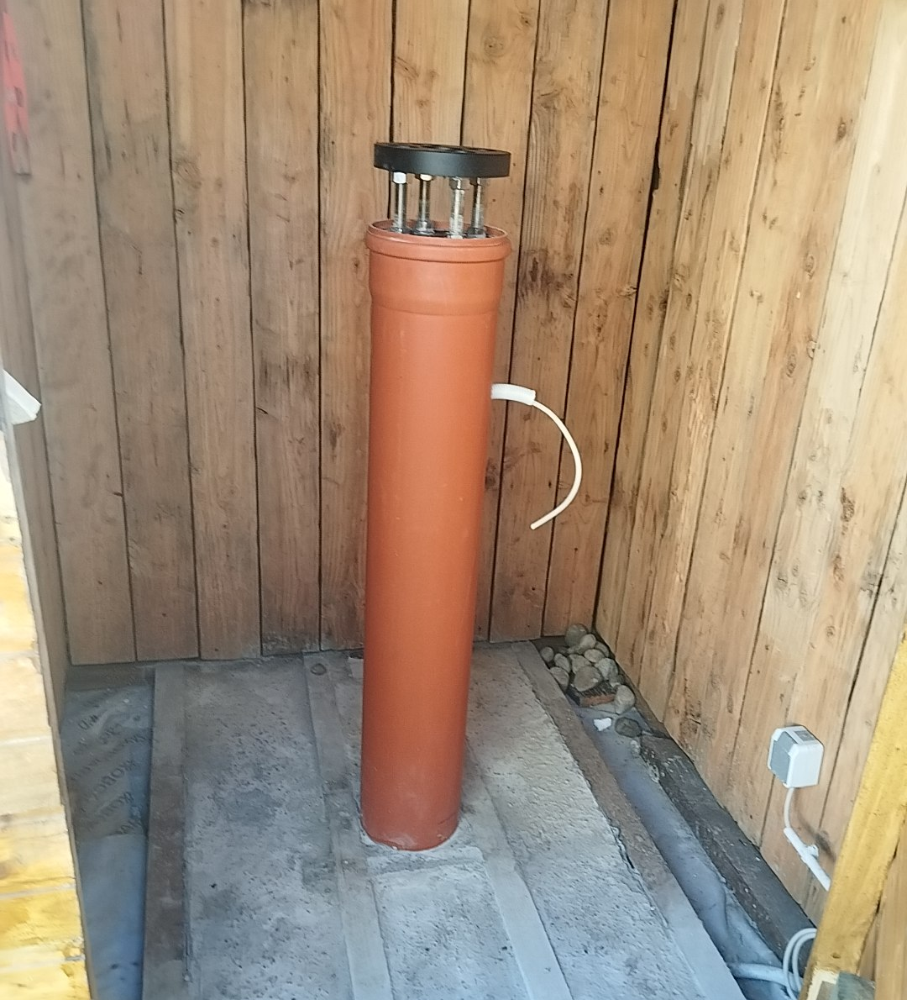
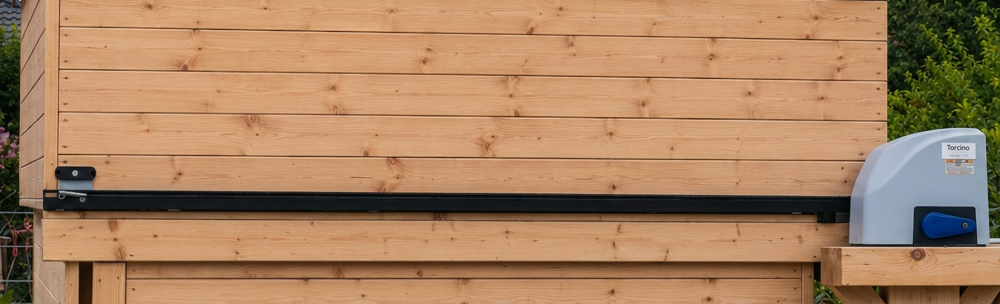
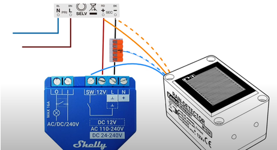
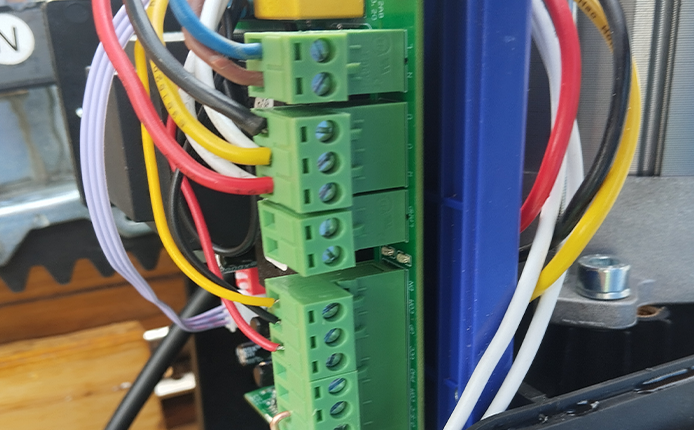

Meine Gartensternwarte befindet sich im Saarland im kleinen Ortsteil Altstadt.
Der Beobachtungsstandort liegt auf einer Höhe von 242 Metern über dem Meeresspiegel und weist mit der Bortle-Klasse 6 einen mäßig lichtverschmutzten Himmel auf.
Die Gartensternwarte ist kompakt gebaut und besitzt die Maße 1,5 × 1,5 Meter.


Außenansicht der fertigen Gartensternwarte mit geöffnetem Dach.


Fleißige Helfer beim Fundament für die Betonsäule: Bryan, ein guter Freund und Astrokollege, packte tatkräftig mit an.

Regensensor mit mechanischer Seitensicherung zum Schutz vor einem unbeabsichtigten Verschieben des Daches.

Der elektrische Torantrieb öffnet und schließt das Dach zuverlässig.

Regensensor sowie Torantrieb sind über zwei Shellys mit dem ioBroker verbunden.

Die komplette elektrische Installation des Torantriebs mit Regensensor.